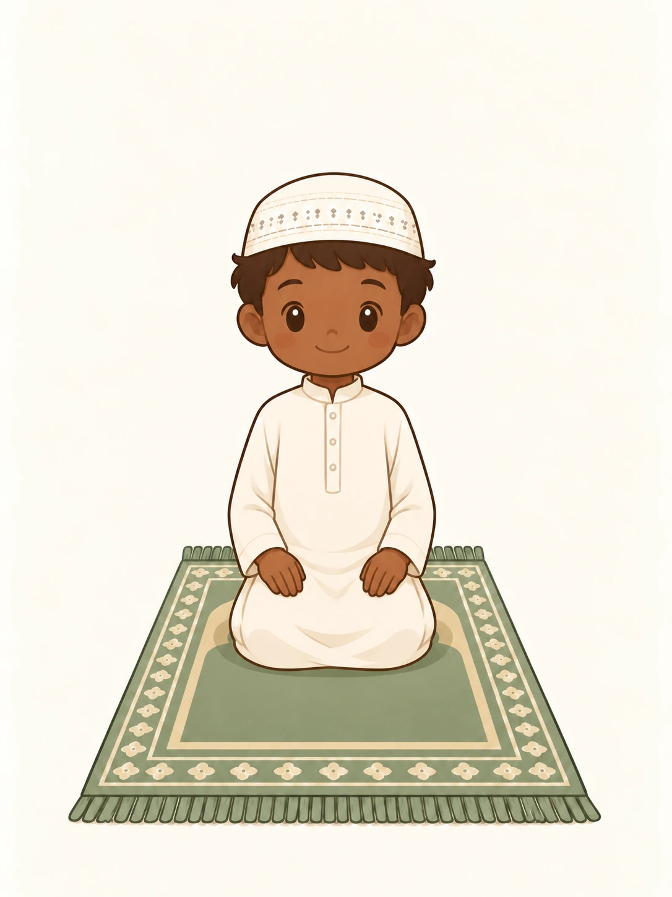
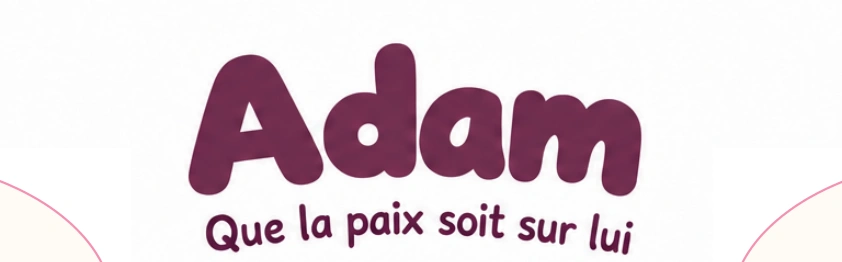
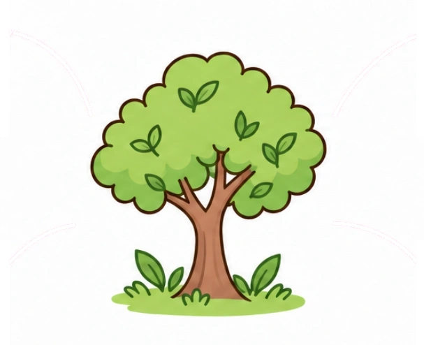

Invocation de la semaine
Avant de dormir
La même invocation toute la semaine.
Un petit pas chaque soir, à ton rythme.
Source : Sahih al-Bukhari · 6324
بِاسْمِكَ اللَّهُمَّ أَمُوتُ وَأَحْيَا
Bismika Allâhoumma amoutou wa ahyâ
En Ton nom, ô Allah, je meurs et je vis.
🌙 Mon petit rituel
0 soirées sur 7Pas besoin de 7 soirs à la suite. Tes étoiles restent acquises.
Une case par jour après l’avoir récitée, même avec l’audio. Ce n’est pas un test de mémorisation.
Progression enregistrée sur cet appareil.

✦ Nouveau · Kawaii Salat
La prière s’apprend,
un geste à la fois.
Des positions en images, une voix douce et les paroles pour apprendre à son rythme.
Découvrir Kawaii SalatUne prière de 4 rak‘as en images à découvrir gratuitement.
Assis, je prie sur le Prophète ﷺ
Après le tachahhoud, toujours assis, j’apprends ces paroles.
اللَّهُمَّ صَلِّ عَلَى مُحَمَّدٍ وَعَلَى آلِ مُحَمَّدٍ، كَمَا صَلَّيْتَ عَلَى إِبْرَاهِيمَ وَعَلَى آلِ إِبْرَاهِيمَ، إِنَّكَ حَمِيدٌ مَجِيدٌ. اللَّهُمَّ بَارِكْ عَلَى مُحَمَّدٍ وَعَلَى آلِ مُحَمَّدٍ، كَمَا بَارَكْتَ عَلَى إِبْرَاهِيمَ وَعَلَى آلِ إِبْرَاهِيمَ، إِنَّكَ حَمِيدٌ مَجِيدٌ.
Phonétique et traduction
Pour m’aider à prononcer
Allâhoumma salli ‘alâ Mouhammadin wa ‘alâ âli Mouhammad, kamâ sallayta ‘alâ Ibrâhîma wa ‘alâ âli Ibrâhîm, innaka hamîdoun majîd. Allâhoumma bârik ‘alâ Mouhammadin wa ‘alâ âli Mouhammad, kamâ bârakta ‘alâ Ibrâhîma wa ‘alâ âli Ibrâhîm, innaka hamîdoun majîd.
Le sens en français
Ô Allah, accorde Ta prière à Muhammad et à la famille de Muhammad, comme Tu as accordé Ta prière à Ibrahim et à la famille d’Ibrahim. Tu es digne de louange et de gloire. Ô Allah, bénis Muhammad et la famille de Muhammad, comme Tu as béni Ibrahim et la famille d’Ibrahim. Tu es digne de louange et de gloire.
Source : Sahîh Al-Bukhârî · 3370 ↗
Le prophète de la semaine
Une découverte gratuite en famille


Adam
Après une erreur, je peux demander pardon.
Découvrir son histoire Voir les 25 prophètesUn nouveau prophète chaque lundi.
OÙ VEUX-TU ALLER ?
Choisis ton activité
Reprendre
Voir toutHORAIRES DE PRIÈRE